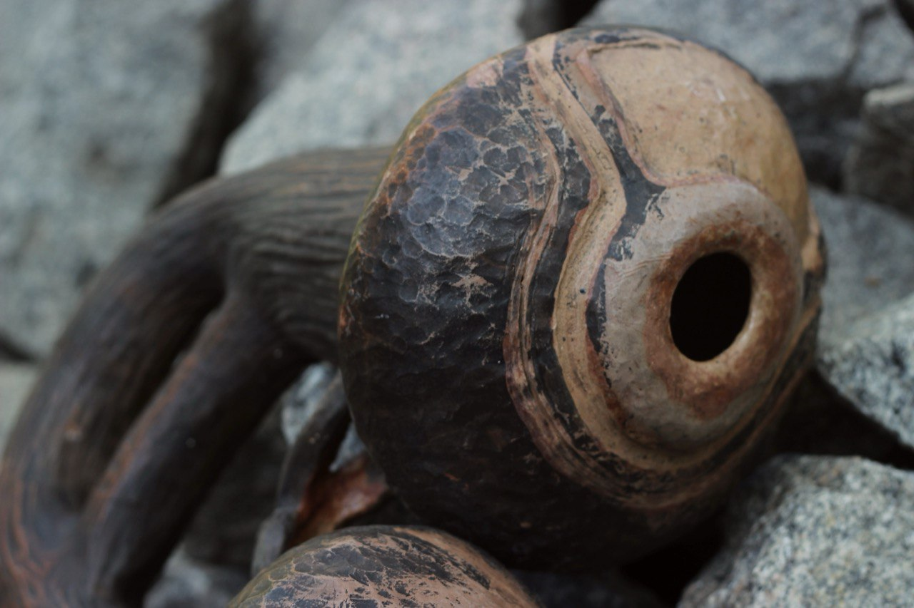
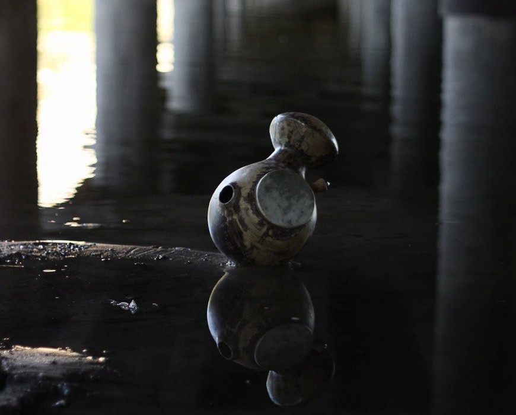

LYNNYK CERAMIC
BeatPot is a unique ceramic pot that combines art and modern technology. Handmade from high-quality clay, this Bluetooth speaker serves not only as a decorative piece for your home but also delivers excellent sound quality. With built-in speakers and a rechargeable battery, you can connect it to your phone or tablet for wireless music streaming.
Handcrafted with love in Ukraine


Each BeatPot is handcrafted, from kneading the clay to firing it in the kiln, ensuring premium quality and a one-of-a-kind design. The pot features holes that allow the acoustic effect to naturally amplify the sound, creating a perfect ambiance in any room. It’s an ideal choice for those looking to add both style and functionality to their space.
Soul in Every Beat
Enjoy effortless Bluetooth connectivity that lets you stream music wirelessly from your phone or tablet. Thanks to its thoughtful design, the pot naturally amplifies sound through acoustic openings — pure, warm, and authentic. And above all, each BeatPot carries a unique artistic touch, turning functional technology into a true piece of art.
